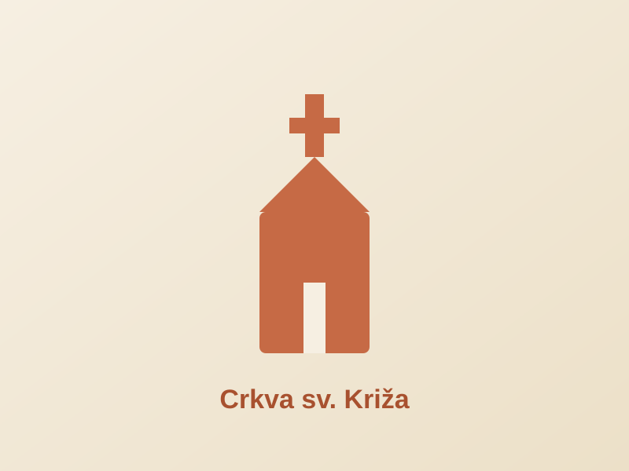
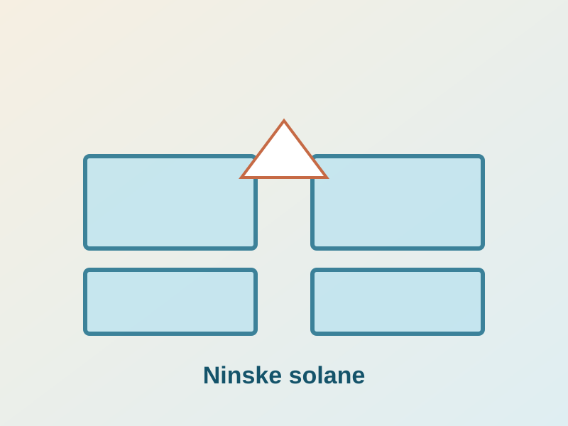
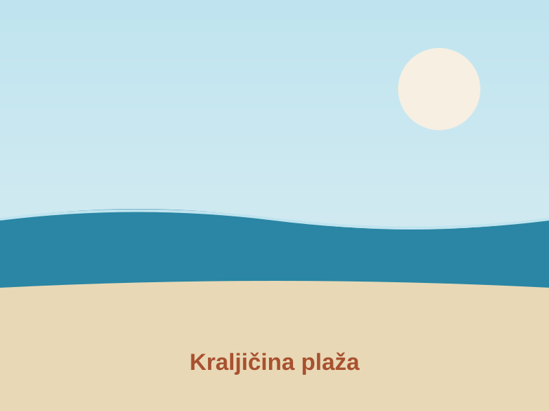
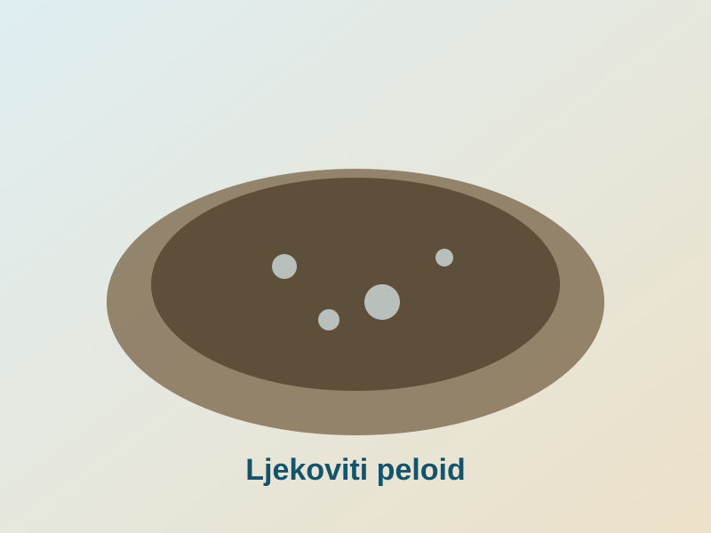
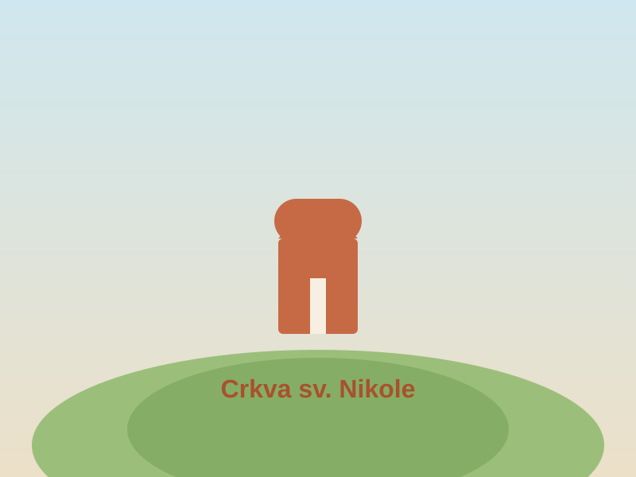

Kultura
Crkva sv. Križa
Predromanička crkva iz 9. stoljeća, poznata kao "najmanja katedrala na svijetu". Jedan je od simbola Nina.
Nin nudi spoj kulturne baštine i prirode na malom prostoru. Odaberite kategoriju kako biste prikazali atrakcije koje vas zanimaju.
Nema atrakcija u odabranoj kategoriji.

Predromanička crkva iz 9. stoljeća, poznata kao "najmanja katedrala na svijetu". Jedan je od simbola Nina.

Proizvodnja soli tradicijskim postupkom isparavanjem morske vode. Uz solane djeluje i muzej soli.

Duga pješčana plaža kod Nina s plitkim morem, pogodna za obitelji i šetnje uz obalu.

Ljekovito blato iz ninske lagune koje se tradicionalno koristi u wellness i zdravstvene svrhe.
Arheološka zbirka s nalazima iz antike i srednjeg vijeka koji svjedoče o dugoj povijesti grada.

Romanička crkva na humku blizu Nina, povezana s tradicijom krunidbi hrvatskih kraljeva.